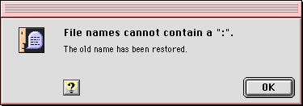

Note Alert Boxes
The note alert box is the first level of alert box. It uses the talking face icon. The note alert box provides useful information which does not imply any threat of data loss. Note alert boxes generally have only an OK button, plus an optional help button. In this case, the user can respond to the information only by acknowledging it. Figure 3-6 shows an example of a note alert box.